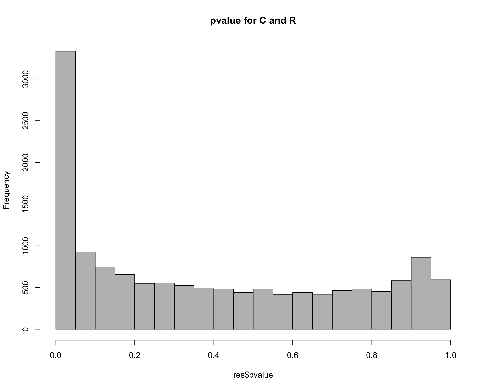
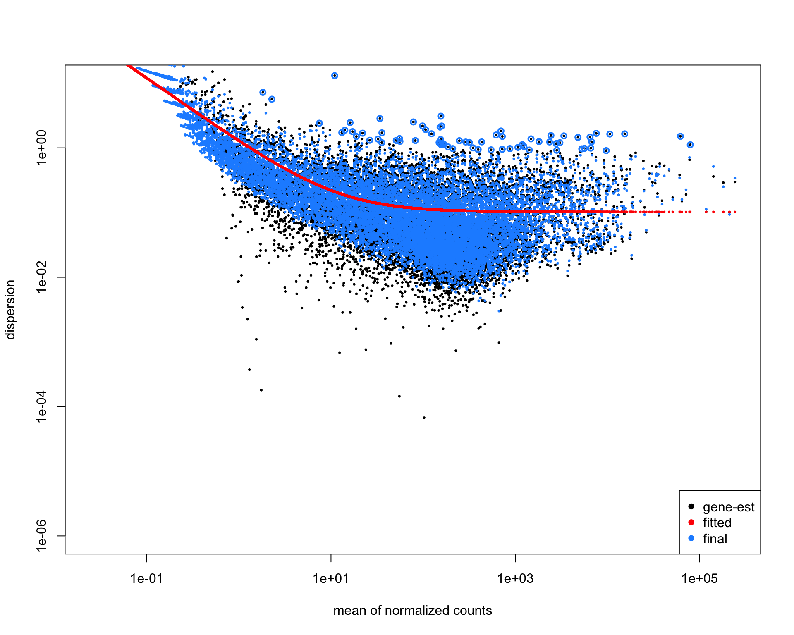
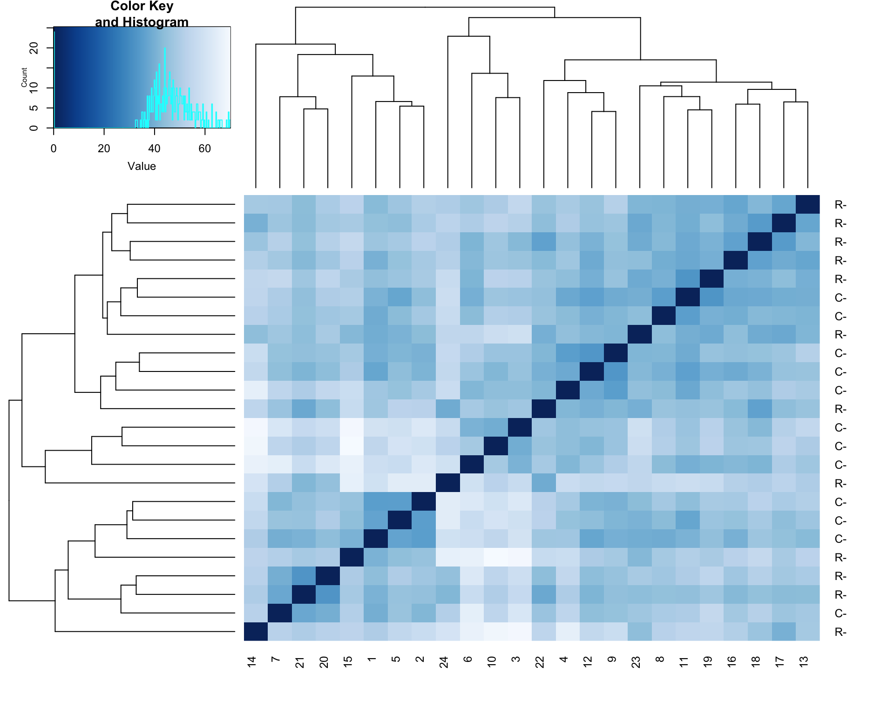
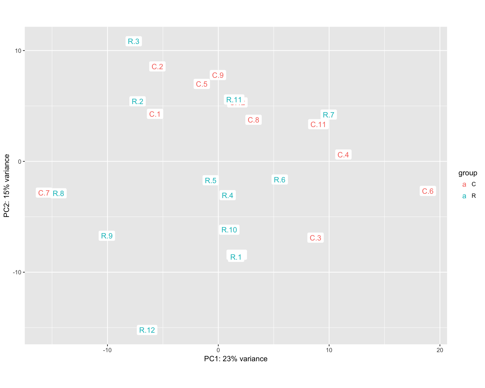
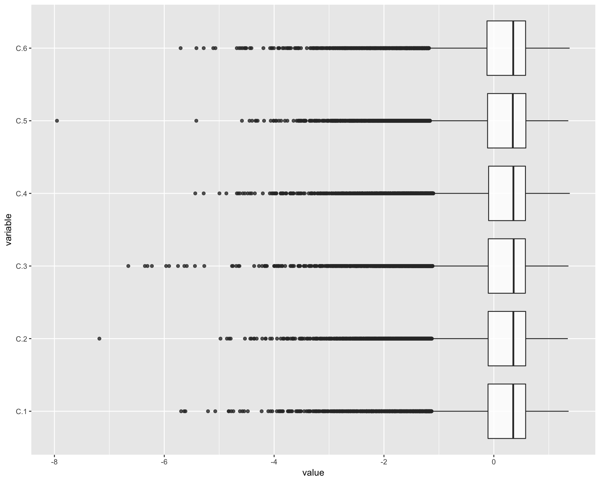
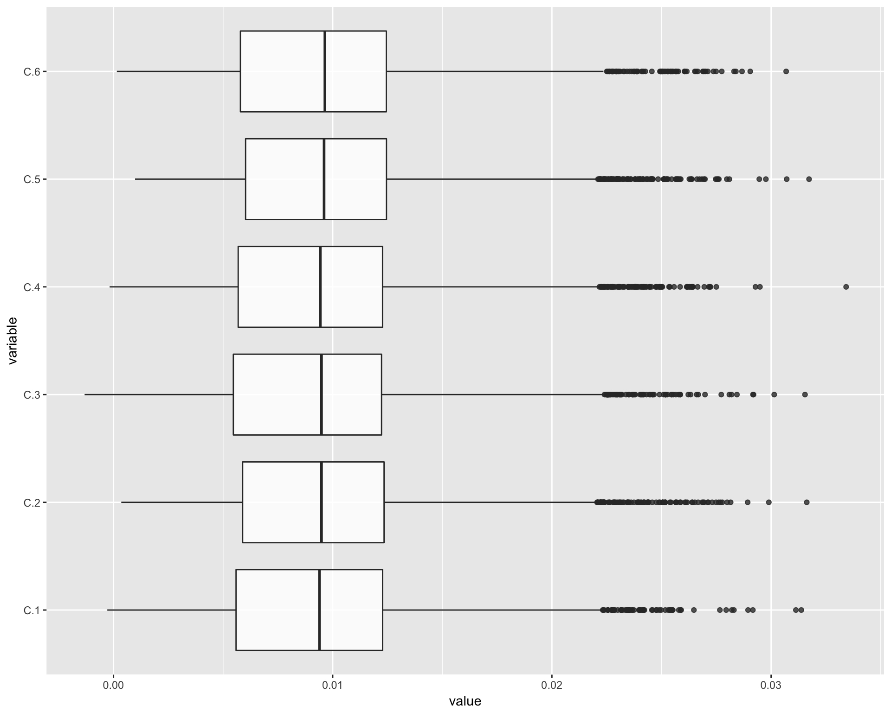

library(DESeq2)Loading required package: S4VectorsLoading required package: stats4Loading required package: BiocGenericsLoading required package: parallel
Attaching package: 'BiocGenerics'The following objects are masked from 'package:parallel':
clusterApply, clusterApplyLB, clusterCall, clusterEvalQ,
clusterExport, clusterMap, parApply, parCapply, parLapply,
parLapplyLB, parRapply, parSapply, parSapplyLBThe following objects are masked from 'package:stats':
IQR, mad, sd, var, xtabsThe following objects are masked from 'package:base':
anyDuplicated, append, as.data.frame, cbind, colMeans,
colnames, colSums, do.call, duplicated, eval, evalq, Filter,
Find, get, grep, grepl, intersect, is.unsorted, lapply,
lengths, Map, mapply, match, mget, order, paste, pmax,
pmax.int, pmin, pmin.int, Position, rank, rbind, Reduce,
rowMeans, rownames, rowSums, sapply, setdiff, sort, table,
tapply, union, unique, unsplit, which, which.max, which.min
Attaching package: 'S4Vectors'The following object is masked from 'package:base':
expand.gridLoading required package: IRangesLoading required package: GenomicRangesLoading required package: GenomeInfoDbLoading required package: SummarizedExperimentLoading required package: BiobaseWelcome to Bioconductor
Vignettes contain introductory material; view with
'browseVignettes()'. To cite Bioconductor, see
'citation("Biobase")', and for packages 'citation("pkgname")'.Loading required package: DelayedArrayLoading required package: matrixStats
Attaching package: 'matrixStats'The following objects are masked from 'package:Biobase':
anyMissing, rowMedians
Attaching package: 'DelayedArray'The following objects are masked from 'package:matrixStats':
colMaxs, colMins, colRanges, rowMaxs, rowMins, rowRangesThe following object is masked from 'package:base':
applylibrary(RColorBrewer)
library(data.table)
Attaching package: 'data.table'The following object is masked from 'package:SummarizedExperiment':
shiftThe following object is masked from 'package:GenomicRanges':
shiftThe following object is masked from 'package:IRanges':
shiftThe following objects are masked from 'package:S4Vectors':
first, secondlibrary(ggplot2)
library(gplots)
Attaching package: 'gplots'The following object is masked from 'package:IRanges':
spaceThe following object is masked from 'package:S4Vectors':
spaceThe following object is masked from 'package:stats':
lowesslibrary(GGally)
thisPath <- getwd()
data <- readRDS("../data/data.Rds")
data <- as.matrix(data)
coldata = data.frame(row.names = colnames(data), treatment = unlist(lapply(colnames(data), function (x) unlist(strsplit(x, "[.]"))[1])))
dds = DESeqDataSetFromMatrix(countData = data, colData = coldata, design = ~ treatment)
dds <- DESeq(dds)estimating size factorsestimating dispersionsgene-wise dispersion estimatesmean-dispersion relationshipfinal dispersion estimatesfitting model and testing-- replacing outliers and refitting for 39 genes
-- DESeq argument 'minReplicatesForReplace' = 7
-- original counts are preserved in counts(dds)estimating dispersionsfitting model and testingWe can examine pairwise combinations of all samples
uTreat <- unique(unlist(lapply(colnames(data), function (x) unlist(strsplit(x, "[.]"))[1])))
allPairs = data.frame(Treatment1 = factor(), Treatment2 = factor(), NumberDEG = numeric())
dataMetrics <- list()
for (i in 1:(length(uTreat)-1)){
for (j in (i+1):length(uTreat)){
res <- results(dds, contrast=c("treatment",uTreat[i],uTreat[j]))
hist(res$pvalue, breaks=20, col="grey", main=paste("pvalue for", uTreat[i], "and", uTreat[j]))
degLength <- length(which((res@listData)$padj <0.05))
metrics = as.data.frame(res@listData)
metrics = cbind(ID = res@rownames, metrics)
metrics$ID = as.character(metrics$ID)
dataMetrics[[paste0(uTreat[i], "_", uTreat[j])]] <- metrics
t1Length <- length(which(metrics[which(metrics$padj <0.05),]$log2FoldChange>0))
t2Length <- length(which(metrics[which(metrics$padj <0.05),]$log2FoldChange<0))
RDC <- metrics[which(metrics[which(metrics$padj <0.05),]$log2FoldChange>0),]$ID
RDR <- metrics[which(metrics[which(metrics$padj <0.05),]$log2FoldChange<0),]$ID
RD_DIET <- metrics[which(metrics$padj <0.05),]$ID
saveRDS(RDC, file="RDC.Rds")
saveRDS(RDR, file="RDR.Rds")
saveRDS(RD_DIET, file="RD_DIET.Rds")
allPairs = rbind(allPairs, data.frame(Treatment1 = uTreat[i], Treatment2 = uTreat[j], NumberDEG = degLength, Treatment1Larger = t1Length, Treatment2Larger = t2Length))
}
}
allPairs <- allPairs[order(allPairs$NumberDEG),]
allPairs Treatment1 Treatment2 NumberDEG Treatment1Larger Treatment2Larger
1 C R 1914 1033 881saveRDS(data, file="data.Rds")
saveRDS(dataMetrics, file="dataMetrics.Rds")plotDispEsts(dds, ylim = c(1e-6, 1e1))
Taking rlog transformation for EDA.
rld <- rlog(dds)
rldDF <- as.data.frame(assay(rld))
saveRDS(rldDF, file="dataRLD.Rds")sampleDists <- dist(t(assay(rld)))
sampleDistMatrix <- as.matrix(sampleDists)
rownames(sampleDistMatrix) <- paste(rld$treatment, rld$patient, sep="-")
colnames(sampleDistMatrix) <- NULL
colours = colorRampPalette(rev(brewer.pal(9, "Blues")))(255)
heatmap.2(sampleDistMatrix, trace="none", col=colours)
print(plotPCA(rld, intgroup="treatment") + geom_label(aes(label = name), label.size=0.001))
ggparcoord(data.frame(log(as.data.frame(assay(rld))/colMeans(as.data.frame(assay(rld))))), columns=1:6, alphaLines=0, boxplot=TRUE, scale="globalminmax") + coord_flip()Warning in FUN(X[[i]], ...): NaNs produced
Warning in FUN(X[[i]], ...): NaNs produced
Warning in FUN(X[[i]], ...): NaNs produced
Warning in FUN(X[[i]], ...): NaNs produced
Warning in FUN(X[[i]], ...): NaNs produced
Warning in FUN(X[[i]], ...): NaNs produced
Warning in FUN(X[[i]], ...): NaNs produced
Warning in FUN(X[[i]], ...): NaNs produced
Warning in FUN(X[[i]], ...): NaNs produced
Warning in FUN(X[[i]], ...): NaNs produced
Warning in FUN(X[[i]], ...): NaNs produced
Warning in FUN(X[[i]], ...): NaNs produced
Warning in FUN(X[[i]], ...): NaNs produced
Warning in FUN(X[[i]], ...): NaNs produced
Warning in FUN(X[[i]], ...): NaNs produced
Warning in FUN(X[[i]], ...): NaNs produced
Warning in FUN(X[[i]], ...): NaNs produced
Warning in FUN(X[[i]], ...): NaNs produced
Warning in FUN(X[[i]], ...): NaNs produced
Warning in FUN(X[[i]], ...): NaNs produced
Warning in FUN(X[[i]], ...): NaNs produced
Warning in FUN(X[[i]], ...): NaNs produced
Warning in FUN(X[[i]], ...): NaNs produced
Warning in FUN(X[[i]], ...): NaNs producedWarning: Removed 8556 rows containing non-finite values (stat_boxplot).
dds <- estimateSizeFactors(dds)
normDat <- counts(dds, normalized=TRUE)
normDat <- as.data.frame(normDat)
ggparcoord(data.frame(log(normDat)/colMeans(normDat)), columns=1:6, alphaLines=0, boxplot=TRUE, scale="globalminmax") + coord_flip()Warning: Removed 19510 rows containing non-finite values (stat_boxplot).